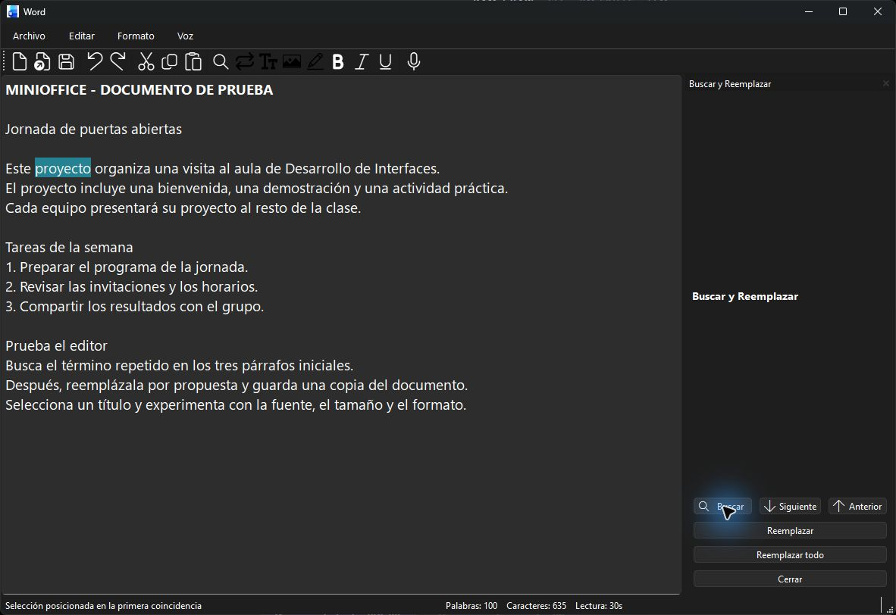
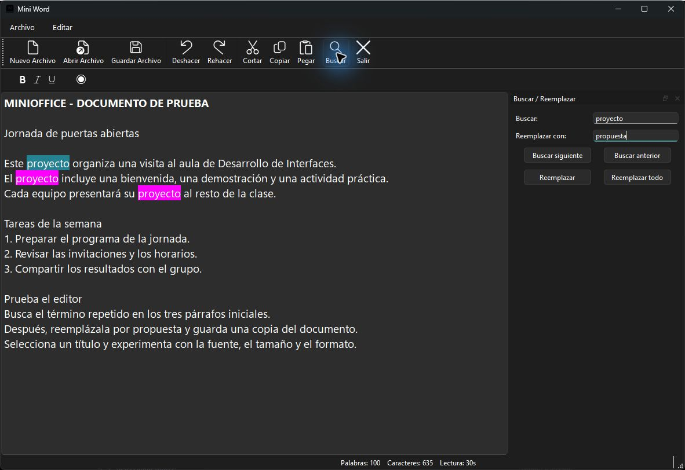

2DAM DI · Tarea
RA1, RA4, RA6-QT MINI OFFICE -- PRACTICA FINAL
Instrucciones
Objetivo: ampliar tu versión alfa de MiniOffice con un panel de búsqueda y reemplazo, una funcionalidad propia y documentación de uso. Continúa sobre el mismo proyecto y conserva las funciones que ya funcionan.
1. Incorpora el panel lateral
Las acciones Buscar y Reemplazar deben mostrar un QWidget situado a la derecha del QTextEdit. El documento seguirá visible mientras se utiliza el panel.
Organiza en él los campos de texto, botones y opciones necesarios. Al abrirlo varias veces debe reutilizarse el mismo panel, sin duplicar controles.
2. Define el comportamiento de búsqueda
- Buscar siguiente y anterior: recorrer las coincidencias hacia delante y hacia atrás desde la posición actual.
- Buscar todas: localizar las coincidencias del documento e indicar el resultado, por ejemplo resaltándolas o mostrando su número.
- Reemplazar: sustituir la coincidencia seleccionada por el texto introducido.
- Reemplazar todas: sustituir todas las coincidencias del documento e informar de cuántas se han cambiado.
Haz explícitas las reglas que uses: distinción entre mayúsculas y minúsculas, coincidencia parcial o palabra completa y comportamiento al llegar al principio o al final. Si ofreces estas opciones en el panel, deben afectar a la búsqueda de forma coherente.
Gestiona la búsqueda vacía y la ausencia de coincidencias con un mensaje comprensible. Ninguna de ellas debe borrar ni modificar el documento.
3. Desarrolla una funcionalidad extra
Añade al menos una mejora funcional distinta de los requisitos anteriores y de las funciones ya presentes en la alfa. Puedes elegirla libremente.
Ejemplos orientativos: Guardar como, zoom del texto, una lista de archivos recientes, negrita/cursiva/subrayado o resaltado de la selección. Explica qué aporta y cómo se utiliza. Un cambio de iconos por sí solo no constituye una funcionalidad nueva.
4. Documenta y entrega el proyecto
Sube el código, los recursos necesarios y un README.md al repositorio Git. La documentación debe permitir que otra persona ponga en marcha la aplicación y pruebe sus funciones principales.
- Requisitos, instalación de dependencias y comando de ejecución.
- Funciones principales, menús y atajos disponibles.
- Uso del panel y reglas de búsqueda y reemplazo.
- Descripción de la mejora propia y pasos para comprobarla.
- Capturas útiles, pruebas realizadas y limitaciones conocidas.
Comprueba el resultado
Utiliza un texto con varias apariciones de una misma palabra. Recorre las coincidencias en ambos sentidos, busca todas, reemplaza una y después el resto. Repite la prueba con una palabra ausente y con el campo vacío.
Comprueba también que puedes abrir y guardar archivos, editar el texto y redimensionar la ventana después de usar el panel. Describe en el README qué esperabas y qué resultado obtuviste.
Si incorporas formato de texto, documenta qué conserva el formato de archivo elegido: un archivo .txt guarda el texto, pero no la fuente, los colores ni los estilos.
Cómo probar las demos
Descarga cualquiera de los dos ZIP de los materiales, extrae toda la carpeta y abre su .exe. Son versiones portables para Windows de 64 bits: no requieren instalar Python. Mantén la carpeta _internal junto al ejecutable.
Las dos se abren con un documento de ejemplo. Busca proyecto, recorre las coincidencias y reemplázalo por propuesta. Guarda una copia y vuelve a abrirla para comprobar el texto. Los archivos .txt no conservan los estilos.
Utiliza estas versiones para comparar comportamientos y decisiones de interfaz. Los requisitos de tu entrega son los del enunciado; cada demo puede incluir funciones adicionales o resolver una operación de otra manera.
Explora MiniDock
Proyecto de Joaquín Carrasco Gómez. Esta versión incorpora un panel acoplable para buscar y reemplazar. Los botones están en el panel y el texto de búsqueda se introduce mediante diálogos. Compárala con el panel con campos integrados que se pide en esta práctica.

Explora MiniOffice de Javier Alcaraz
La versión de Javier Alcaraz Martín reúne los campos de búsqueda y reemplazo en un panel lateral y resalta las coincidencias en el documento.
